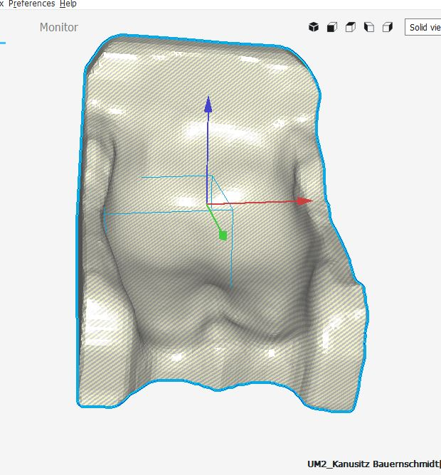

SCANNER 1

SCANNER 2

First of all we speak to Katharina about which modifications she wanted in her new seat. Once we have this informations we get in contact with the company Hodey. We started our design using the scanner that we obtained one from Hodey and the other one from professor Danjou. Once we obtained both scanners we started to work in the design in Fusion 360. Our expirence with this program was the knowledge was obtained in the FabLab during this course so Adriana gave us some orientation on how to work with the program.
Katharina told us that she wanted a seat that fit her body perfectly so we needed the scanner of her body in order to create the form that the inside of the seat should have to achieve this goal. For this task we create a plane. This plane was modified using the tool the move to put it in the right angle and position in a way that would fit the scanner easily.
Then we divided the plane into squares. Adriana recommended us not to do lot of squares, otherwise the process will be really tedious and really difficult. Once the plane was divided we started to modify each edge, square and point with the tool modify, rotating and moving them in order to make them fit the scanner in the best possible way.
This process was really long because each point needed to be adjusted but we finally get to a form that was good enough to work on it.
The next step was to use the tool pull-up inside the modify options to create a better adjustment of the plane to the scanner. Once the process was done we got the final result of the seat part. To create a seat that was not thin like a paper we used the tool thicken to give it some volume.
Once we had this form we needed the bottom part. For this part we had the scanner of the seat that Katharina was using at that moment. As a result of our force studies we got the conclusion that this part should be a cross and not two parallel joins. Once we got to the conclusion of the design we start working with the scanner. We erased the top part of the seat scanner and scale the remaining part that should be perfect to attach the seat to the kayak once it was join to the seat that we created before.
Unfortunately the tool convert was not able to convert the scanner into a solid body due to the size of the scanner. We try to do it reducing the size of the scanner on Meshmixer, but it did not work, so the idea of creating the perfect seat out of both scanners was not feasible anymore.


With the time that was available we created a rough prototype. We created a rectangle under the seat and using the tool extrude we transform it into a box. Then using the tool split body and selecting the box as a body to split and the seat as the splitting body we created a really thick seat with a plane base.
To make the seat a little bit better-looking we rounded the edges of the seat and draw some lines that using the tool split body helped us to clean the shape of the seat.
Once we were happy with the result we create the joins of the seat that will attach it to the kayak taking the scanner as a guide to make them kind of scale. We created the holes that were in the hooks and rounded the edges to make it look better.
Finally we printed this prototype in PLA that was one of the materials available in the FabLab.

We try to do again the seat with the scanner to make it less rough and use FreeCad to do it instead of Fusion because Fusion was not working in a proper way. We create a seat out of the scanner but it is not perfect and is not a solid body just two mesh files joined in one, but the computer is not powerful enough to convert it into a solid body.
As we decided to work with the carbon fiber but it was not available in the FabLab we decided to design a future project to develop the seat. As carbon fiber is a textile we can work with it like with any other textiles so we will use the result of the design from the scanners and the plane and import it into ExactFlat.
In this program we can transform the figure into a flat pattern that will be the exact measuring of the prototype that we want to create. Once this is done we can transform the scanner from Hodey that contains Katharina’s shape and printed to use it as a mould.
Then using the laser cutter and the pattern created in ExactFlat we can cut the carbon fiber and using the technique Epoxy that we looked on internet we can create the seat with the carbon fiber.
The part that join the seat to the kayak would be more difficult because it is needed to be create out of aluminium and we do not know how to work with metals.